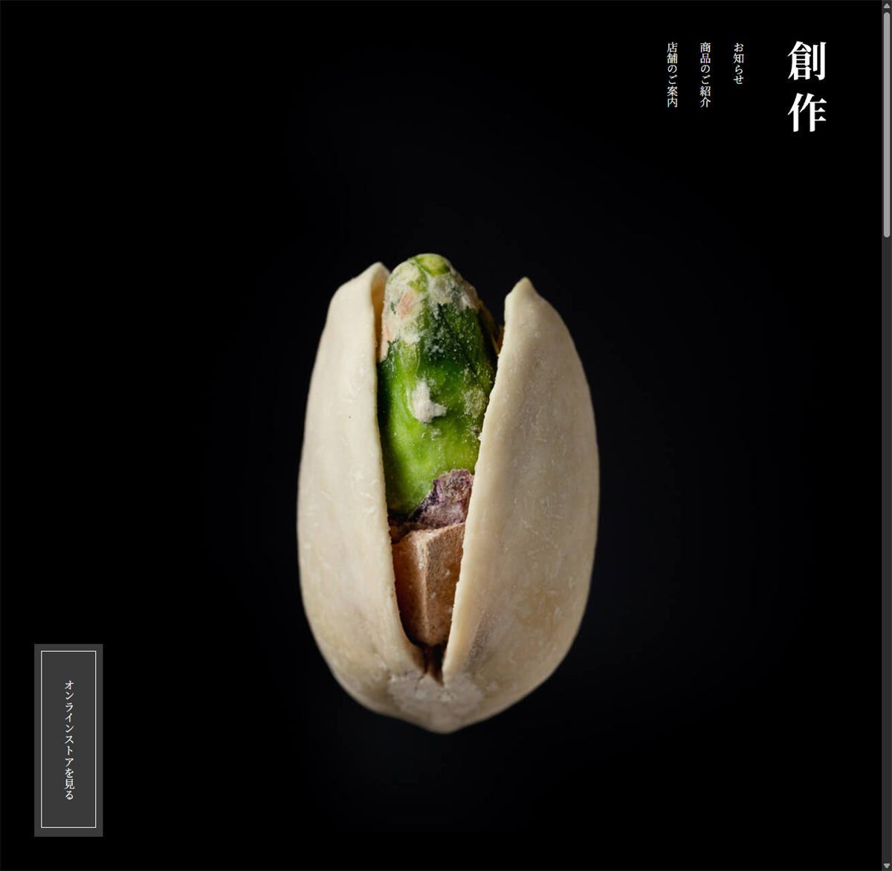
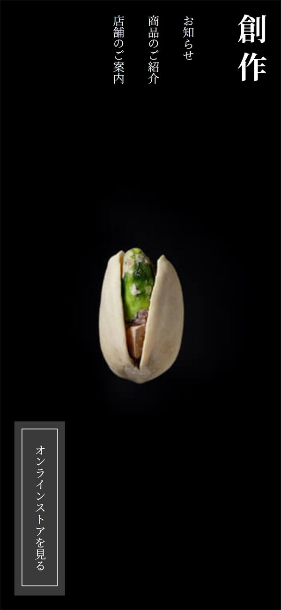
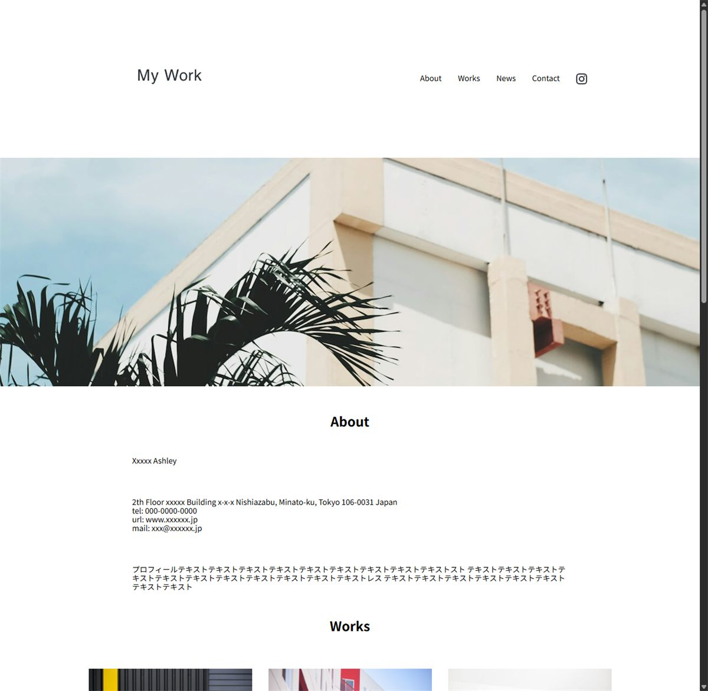
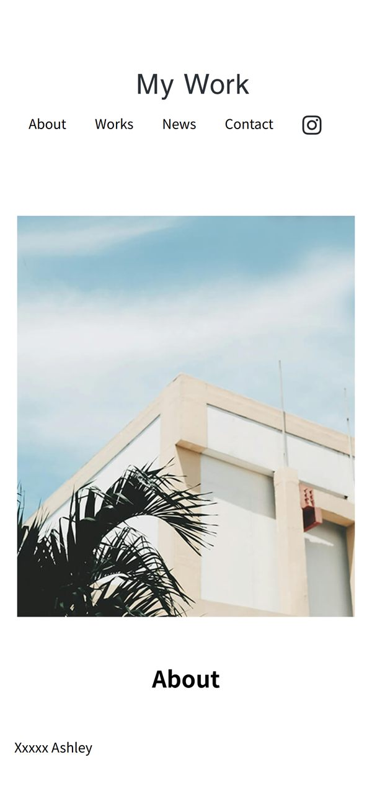

NO.05
模写／HTML・SCSS・JavaScript
コーディング練習（store / SOUSAKU / MyWork）
コーディング練習サイト「CodeJump」のデザインを模写した3つのサイトです。スクールのカリキュラムでは詳しく触れていないことに、あえて挑戦する場にしました。
01ねらい
3つのサイトは、カリキュラムで詳しく触れていないことを試すための練習にしました。挑戦したのは、次のようなことです。
- SCSSを初めて実装する
- リセットCSS（destyle.css と ress）を使い分ける
- Grid と Flexbox を多用する
- 縦書きに挑戦する
サイトごとに新しいことを1つずつ取り入れて、教わったことの外側にも自分で手を伸ばせるようにしました。
023つのサイト
-


家具のECサイト
store
SCSSを初めて実装したサイトです。ファイルを base・layout・pages の3つに分けて書きました。全21ページで、ハンバーガーメニューはJavaScriptで作っています。
- SCSS
- ress
- JavaScript
- Flexbox
- CSS Grid
-


お店のブランドサイト
SOUSAKU
縦書きに挑戦したサイトです。ロゴ・メニュー・ボタンの文字を縦に組み、和の雰囲気を出しました。
- 縦書き（writing-mode）
- destyle.css
- Flexbox
-


ポートフォリオサイト
MyWork
GridとFlexboxを使い分けたサイトです。メインビジュアルではpicture要素を初めて使い、PCとスマホで画像を切り替えています。
- picture / source media
- CSS Grid
- Flexbox
- destyle.css
03つまずいたこと
JavaScriptを書くのは、このコーディング練習が3回目でした。storeのハンバーガーメニューは、最初は思ったように動きませんでした。
原因を自分で検索して調べ、直しては動かして確かめることを繰り返し、完成させました。うまくいかないときに自分で原因を探して直す流れを、ここで身につけました。